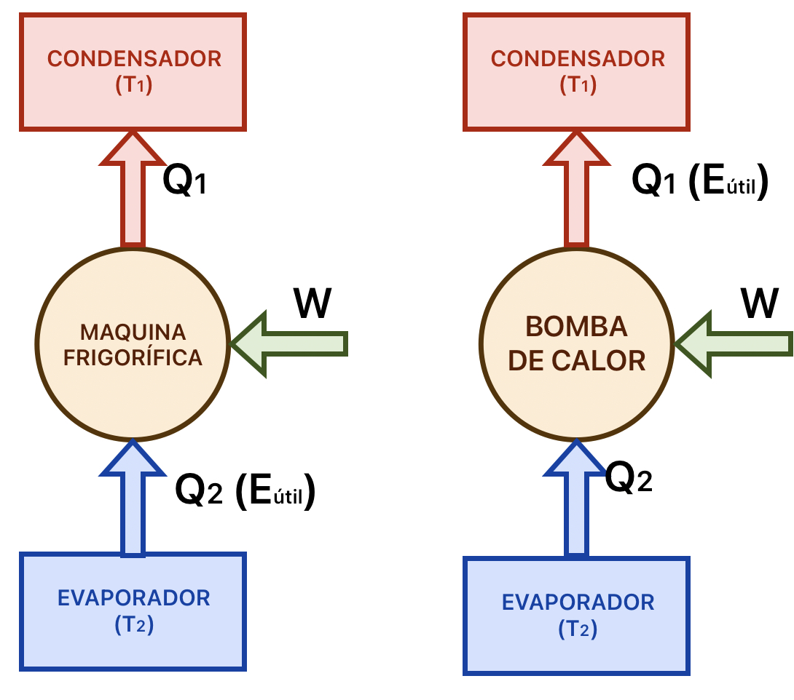
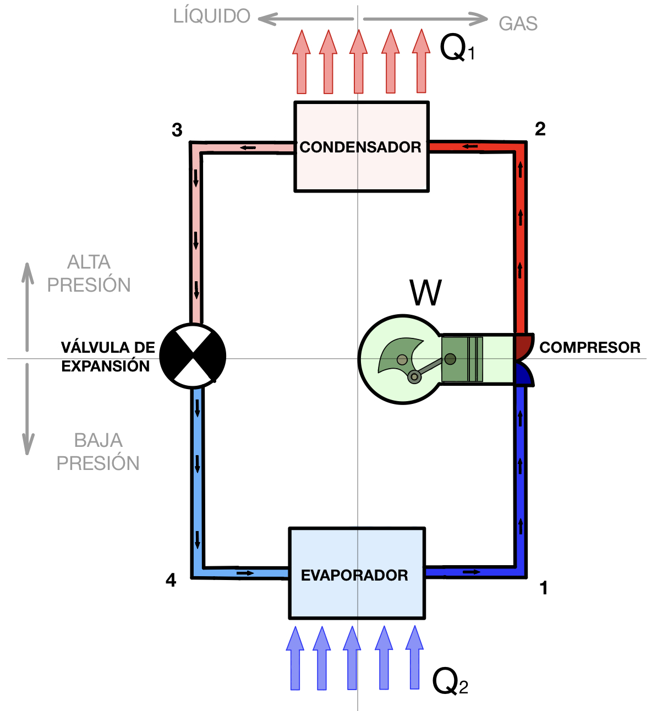
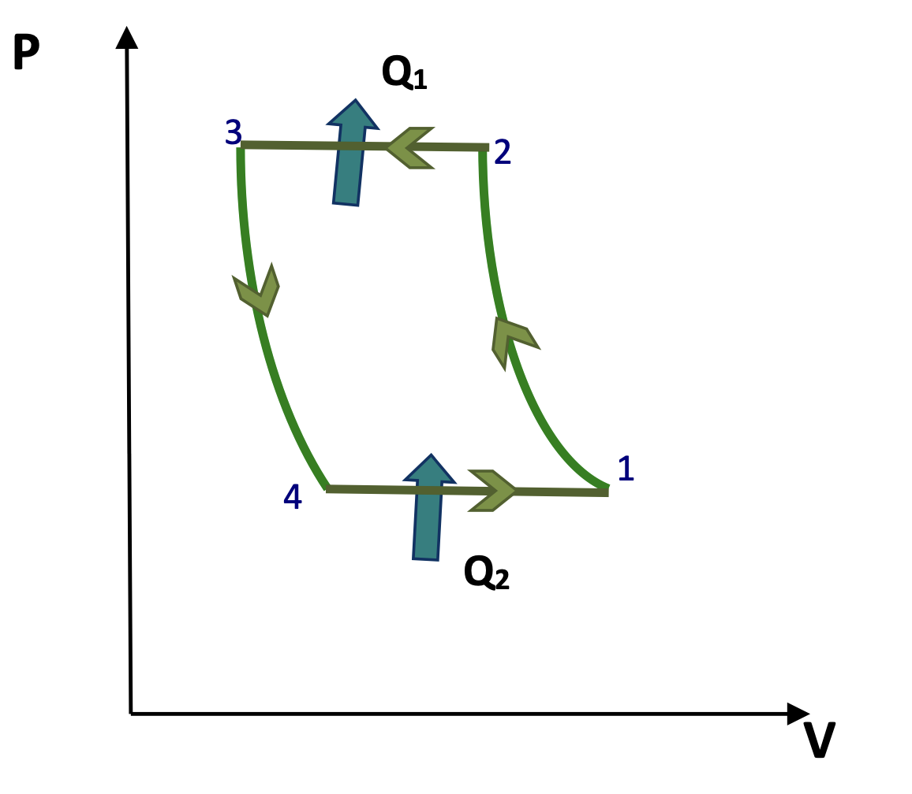

Consideraciones generales
Tanto las máquinas frigoríficas como las bombas de calor siguen la misma filosofía: transferir calor desde un foco frío hacia un foco caliente. Como ya estudiamos en la sección 1, para conseguir esto, que no es un proceso espontáneo, es necesario aportar un trabajo mecánico a la máquina. Aquí vas a ver cómo están construidas por dentro; las expresiones de la eficiencia (ε y ε' = COP) están en la sección 1 y no se repiten.
Para conseguir su objetivo, suelen utilizarse dos métodos: absorción o compresión. Las máquinas frigoríficas más utilizadas son las de compresión, por lo que serán las únicas que estudiemos nosotros.
Estas máquinas emplean un fluido especial con bajo punto de ebullición llamado fluido frigorígeno. Cuando el fluido se evapora, absorbe calor de su entorno mientras que cuando se condensa, cede calor. Si hacemos que la evaporación se lleve a cabo en el foco frío de la máquina, el fluido absorberá calor del foco frío. Haciendo luego que condense en el foco caliente, cederá calor a dicho foco.
Por esta razón, al foco frío de estas máquinas se le llama evaporador y al foco caliente condensador. El esquema termodinámico de estas máquinas será el siguiente:

En este apartado simplemente vamos a ver cómo están construidas estas máquinas, sin entrar a calcular parámetros ni magnitudes. Aunque en las siguientes secciones se verán particularidades de estas máquinas, el esquema básico de elementos que las componen es el mismo para todas. Están constituidas por cuatro elementos básicos:
- Compresor: aumenta la presión del frigorígeno para facilitar su condensación y, además, posibilita la circulación del fluido.
- Condensador: en el condensador el fluido cambia de fase pasando de gas a líquido y cediendo calor en el proceso.
- Válvula de expansión: reduce la presión, provocando el enfriamiento del fluido frigorígeno.
- Evaporador: en él, el fluido frigorígeno cambia de fase de líquido a gas, absorbiendo calor en el proceso.
En este esquema puedes ver cómo se disponen los elementos en una máquina de este tipo:

El fluido frigorígeno sigue en estas máquinas un ciclo de compresión de vapor, compuesto por dos isobáricas y dos adiabáticas. No lo confundas con el ciclo de Carnot de la sección 1: aquel es el ciclo ideal, con dos isotermas, y sirve para fijar el máximo de eficiencia que se podría alcanzar entre esas dos temperaturas; este es el ciclo real que recorre el fluido dentro de la máquina.

Adiabática 1→2 (Compresor): comprime el fluido frigorígeno que le llega en estado de vapor, con lo que reduce su volumen y aumenta su presión y su temperatura. Además, facilita la circulación del fluido a lo largo de la máquina.
Isobárica 2→3 (Condensador): es un intercambiador de calor donde se condensa el fluido frigorígeno por circulación de aire o de agua. En este proceso se cede una cantidad de calor Q1 y el fluido disminuye su volumen, a presión constante.
Adiabática 3→4 (Sistema de expansión): el fluido líquido se expansiona disminuyendo su presión y aumentando su volumen. Este proceso supone una reducción brusca de temperatura, al ser adiabático.
Isobárica 4→1 (Evaporador): el fluido se evapora absorbiendo un calor Q2 de su entorno y provocando un enfriamiento de este.
Máquina frigorífica
La máquina frigorífica busca mantener o bajar la temperatura del foco frío, por lo que su evaporador es su zona de efecto útil. Estas máquinas se suelen utilizar para dos aplicaciones básicamente:
- Frigoríficos y congeladores
- Aires acondicionados
Cada aplicación tiene algunas particularidades constructivas, pero el esquema básico de la máquina es el que hemos visto antes.
En este vídeo tienes explicado cómo funciona un frigorífico por dentro:
En este otro vídeo tienes explicado el funcionamiento de un aire acondicionado:
Como curiosidad, en la refrigeración se utiliza una unidad especial, denominada frigoría (fg). Una frigoría equivale a 1000 calorías de calor absorbido de un foco frío. Es decir, 1 fg = 1000 cal = 1 kcal
Bomba de calor y máquinas reversibles
La bomba de calor funciona bajo el mismo principio que la máquina frigorífica, pero su objetivo no es enfriar el foco frío, sino calentar el foco caliente.
Las bombas de calor son una manera mucho más eficiente de calentar que, por ejemplo, las resistencias eléctricas y son mucho menos contaminantes que las calderas y quemadores de combustibles. Recuerda que la eficiencia de una bomba de calor siempre es mayor que la unidad, por lo que produce más energía calorífica que la energía mecánica que consume.
La fuente fría no tiene por qué ser exclusivamente el aire de la calle en invierno, sino que también podrían ser el agua de un río, una corriente subterránea o incluso el terreno. De la misma forma, el condensador puede ceder calor, además de al aire ambiente, a sistemas de agua.
En función de la fuente de la que toman calor y a cual se lo ceden, se obtiene la siguiente clasificación:
- Aire – aire: son las más extendidas; por el precio y sobre todo por la disponibilidad de las fuentes. La máquina toma calor del aire exterior y se lo cede a un caudal de recirculación del aire del local a calentar. Es como un aire acondicionado, pero al revés: se usa para calentar recintos en invierno.
- Aire – agua: toma el calor del aire exterior y se lo cede al agua de circulación de una instalación de calefacción por agua, que puede ser de suelo radiante o de radiadores.
- Agua – aire: toma el calor de una corriente de agua (un río cercano o una corriente subterránea) y se lo cede al aire del local a calentar.
- Agua – agua: toma el calor de una corriente de agua y se lo cede al agua de una instalación de calefacción. Estas bombas que toman calor del agua tienen un COP superior a las de aire, ya que las corrientes de agua subterráneas tienen una temperatura casi constante. Sin embargo, su uso está supeditado a la existencia en las cercanías de la instalación de una corriente de agua adecuada, lo cual no es fácil y restringe en gran manera la aplicación de estas máquinas.
Las más usadas, las de aire-aire, tienen una concepción casi idéntica a un aire acondicionado, por lo que suele aprovecharse para construir una máquina reversible: puede funcionar como un aire acondicionado en verano y como una bomba de calor en invierno. Esto se logra utilizando una válvula que puede invertir el recorrido del fluido frigorígeno por la máquina, de manera que lo que en invierno es el condensador pase a ser el evaporador en verano y viceversa.
En este vídeo puedes ver con más detalle la válvula que invierte el ciclo y hace que la misma máquina sirva para calentar en invierno y para enfriar en verano: